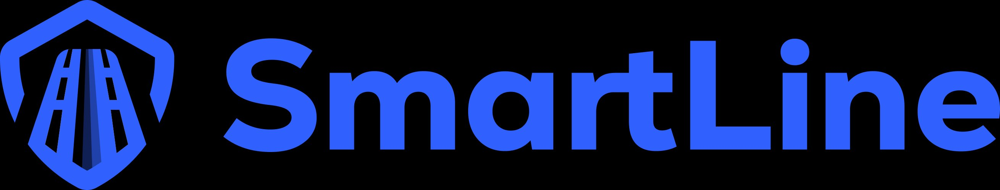
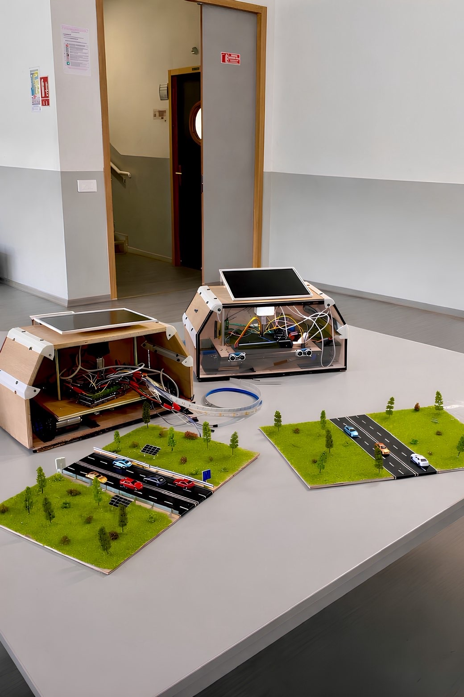
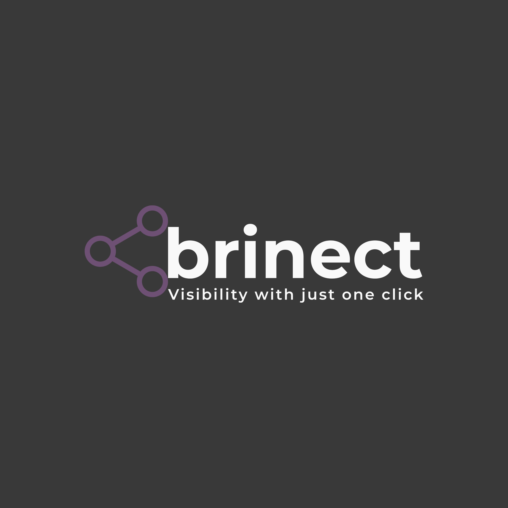

Des terre-pleins modulables et connectés qui s'adaptent en temps réel au trafic — pour réduire la congestion et décarboner la ville de demain.

SmartLine remplace les terre-pleins fixes par des blocs motorisés intelligents — une infrastructure qui s'adapte au trafic, pas l'inverse.
Les blocs se déplacent selon la densité de trafic — une voie créée là où le besoin est réel, en temps réel.
Panneaux solaires intégrés au-dessus de chaque module pour un fonctionnement totalement autonome.
Voies réservées créables à la demande pour améliorer la ponctualité des transports en commun.
Moins de congestion = moins de ralentissements = moins d'émissions. Impact environnemental direct.
Caméra équipée d'IA pour détecter les perturbations trafic et déclencher la reconfiguration automatique.
Signalisation LED et supervision caméra pour garantir la sécurité lors de chaque reconfiguration.
Un système en 4 étapes qui transforme un axe routier en infrastructure adaptative.
Les 4 capteurs ultrasons mesurent en continu la densité de véhicules dans chaque sens.
La caméra IA et l'Arduino Mega analysent les flux et déclenchent la reconfiguration si nécessaire.
Le moteur pas-à-pas abaisse le plateau via la vis sans fin. Les moteurs DC propulsent le module.
Les LEDs s'activent. Le plateau remonte pour verrouiller le module en position finale.
Terminales au lycée LaSalle Passy Buzenval — finalistes OSI 2026.
Maquette, mécanique des blocs & étude impact CO₂.
Arduino Mega, câblage, L298N, LCD et LED.
SysML, supervision caméra IA & cohérence système.
Code Arduino, application mobile & communication.
SmartLine bénéficie du soutien de professionnels reconnus.

Plateforme de visibilité digitale — partenaire officiel avec autorisation logo signée.
Acteur mondial de la mobilité — soutien de la Direction Innovation de Transdev.
Explorez notre dépôt GitHub pour accéder au code, à la CAO et à la documentation technique.